⬅️ Back to 8085 Notes
8051 Microcontroller Experiments
8051 Microcontroller Specifications
- Memory Capacity: 64KB RAM/ROM (maximum external memory).
- Data Bus: 8-bit.
- Address Bus: 16-bit (16 address lines).
- Addressing Range: 216 = 64KB = 65536 bytes (Ranges from 0000H to FFFFH).
- I/O Ports: 4 I/O ports providing a total of 32 I/O lines (1 port = 8 bits).
- Clock Frequency: 12 MHz.
- Machine Cycle: Takes 12 T-states within a machine cycle.
- ALE: Address Latch Enable.
- PSEN: Program Store Enable.
- Multiplexing: Lower order address and data lines (AD0 - AD7) are time-division multiplexed.
8051 Architecture & Fundamentals
1. Microprocessor vs Microcontroller
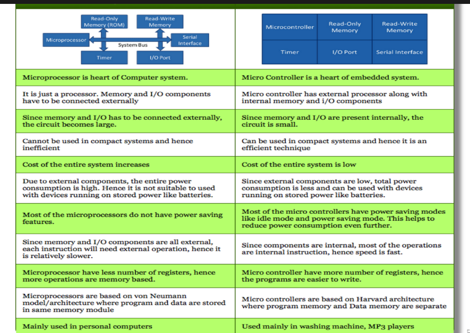
| Microprocessor |
Microcontroller |
| Microprocessor is heart of Computer system. |
Micro Controller is a heart of embedded system. |
| It is just a processor. Memory and I/O components have to be connected externally. |
Micro controller has external processor along with internal memory and I/O components. |
| Since memory and I/O has to be connected externally, the circuit becomes large. |
Since memory and I/O are present internally, the circuit is small. |
| Cannot be used in compact systems and hence inefficient. |
Can be used in compact systems and hence it is an efficient technique. |
| Cost of the entire system increases. |
Cost of the entire system is low. |
| Due to external components, the entire power consumption is high. Not suitable for devices running on stored power like batteries. |
Since external components are low, total power consumption is less and can be used with battery-powered devices. |
| Most of the microprocessors do not have power saving features. |
Most micro controllers have power saving modes like idle mode and power saving mode to reduce consumption further. |
| Since memory and I/O components are all external, each instruction will need external operation, hence it is relatively slower. |
Since components are internal, most of the operations are internal instructions, hence speed is fast. |
| Microprocessor have less number of registers, hence more operations are memory based. |
Micro controller have more number of registers, hence the programs are easier to write. |
| Based on von Neumann model/architecture where program and data are stored in same memory module. |
Based on Harvard architecture where program memory and Data memory are separate. |
| Mainly used in personal computers. |
Used mainly in washing machine, MP3 players. |
2. 8051 Basic Components & Features
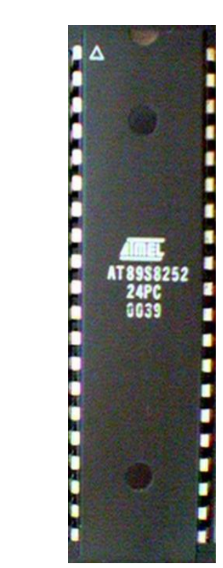
- 4K bytes internal ROM
- 128 bytes internal RAM
- Four 8-bit I/O ports (P0 - P3)
- Two 16-bit timers/counters
- One serial interface
Key Features
- Only 1 On-chip oscillator (requires external crystal)
- 6 interrupt sources (2 external, 3 internal, Reset)
- 64K external code (program) memory (Read-only, accessed via PSEN)
- 64K external data memory (Read/Write, accessed by RD, WR)
- Code memory is selectable by EA (internal or external)
3. Internal Block Diagram
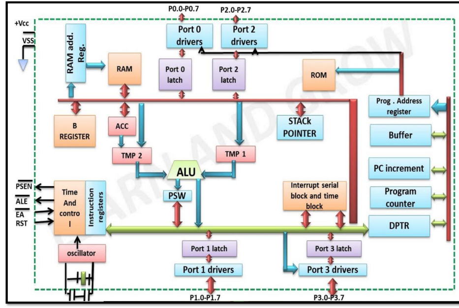
8051 Architecture: ALU, RAM, ROM, Timers, Interrupt Control, and I/O Ports
4. Schematic Pin Diagram & Descriptions
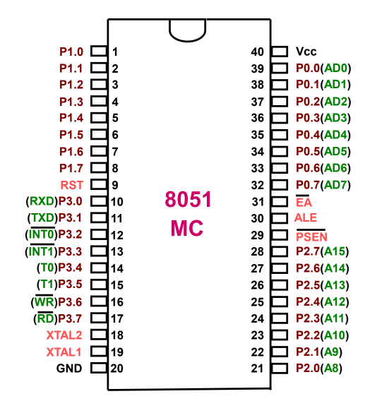
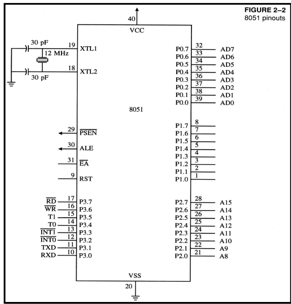
I/O Ports (Bi-directional)
- Port 0 (Pins 32-39): 8-bit R/W General Purpose I/O. Or acts as a multiplexed low byte address and data bus (AD0-AD7) for external memory.
- Port 1 (Pins 1-8): 8-bit R/W General Purpose I/O only.
- Port 2 (Pins 21-28): 8-bit R/W General Purpose I/O. Or acts as the high byte of the address bus (A8-A15) for external memory.
- Port 3 (Pins 10-17): General Purpose I/O, but also provides alternate functions:
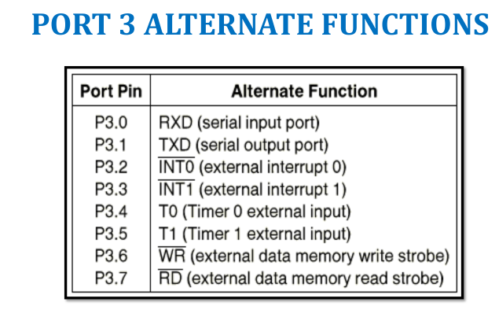
- P3.0 (RXD): Serial Input
- P3.1 (TXD): Serial Output
- P3.2 (INT0): External Interrupt 0
- P3.3 (INT1): External Interrupt 1
- P3.4 (T0): Timer 0 External Input
- P3.5 (T1): Timer 1 External Input
- P3.6 (WR): External Data Memory Write Strobe
- P3.7 (RD): External Data Memory Read Strobe
Power & Clock Pins
- Vcc (Pin 40): +5V Supply Voltage.
- GND (Pin 20): Ground.
- XTAL1 & XTAL2 (Pins 19, 18): Connected to a quartz crystal oscillator (typically with two 30pF capacitors to ground) to provide the external clock.
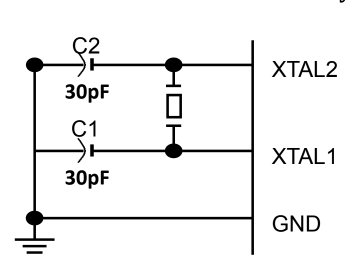
Control Pins
- RST (Pin 9): Reset (Active High). A high pulse for at least 2 machine cycles resets the microcontroller.
Power-on Reset Values: DPTR=0000, PSW=0000, B=0000, ACC=0000, PC=0000. SP=0007. RAM is zeroed out.
- EA (Pin 31): Enable External Access.
If EA is LOW (connected to GND), the program memory is external.
If EA is HIGH, addresses 0000-0FFF refer to on-chip ROM, and 1000-FFFF refer to external memory.
- PSEN & ALE: Used for accessing external ROM and latching the address.
8051 Memory Architecture & Addressing Modes
1. Access to External Memory (ALE & PSEN)
The 8051 uses address multiplexing to interface with external ROM and RAM, saving pins on the IC.
- Port 0: Acts as a multiplexed address/data bus. It sends the low byte of the address (A0-A7) and then switches to become the data bus (D0-D7).
- Port 2: Sends the high byte of the program counter (A8-A15) directly to the external memory.
- ALE (Address Latch Enable): An active-high output pin used to de-multiplex Port 0. It connects to the G pin of an external latch (like the 74LS373). When ALE is high, the latch stores the low byte of the address, freeing Port 0 to receive/send the data byte.
- PSEN (Program Store Enable): An output pin connected to the OE (Output Enable) pin of external ROM for fetching instructions.
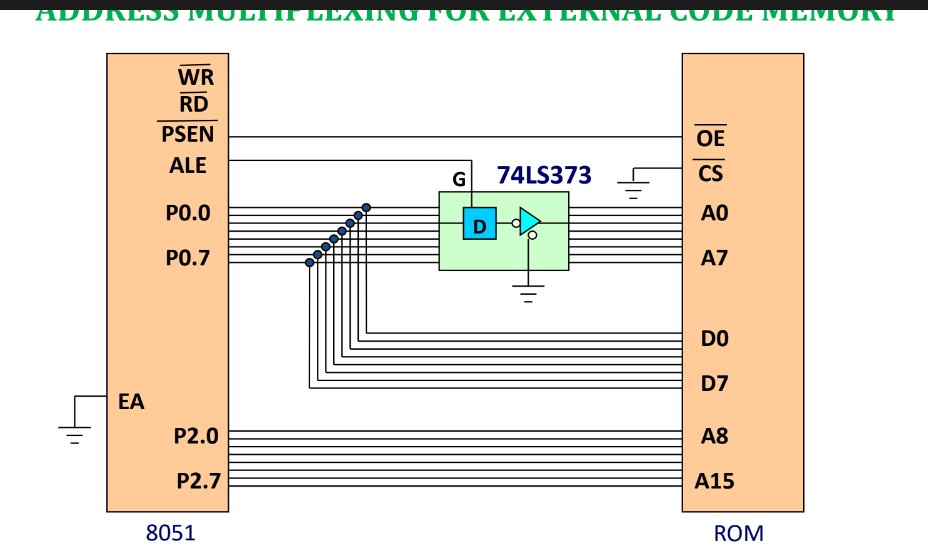
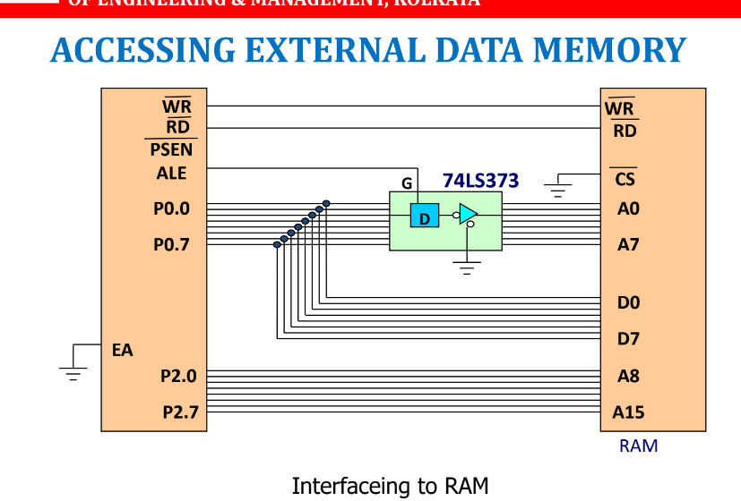
2. Internal Memory Organization (RAM)
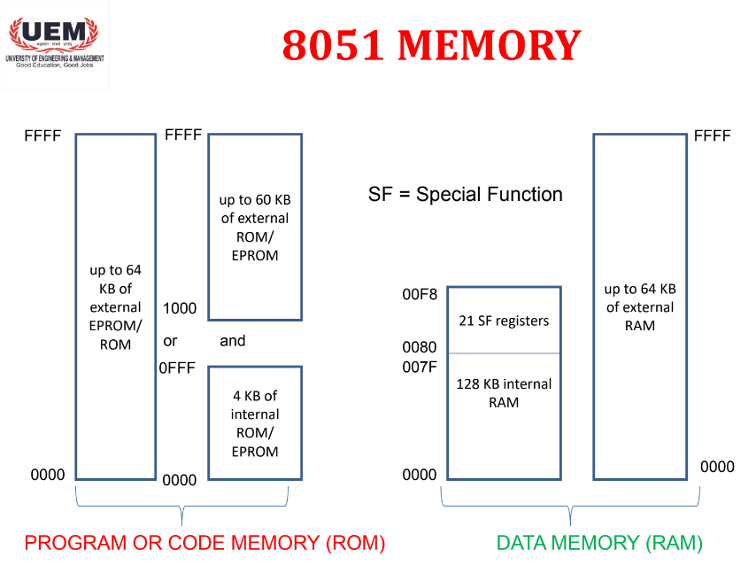
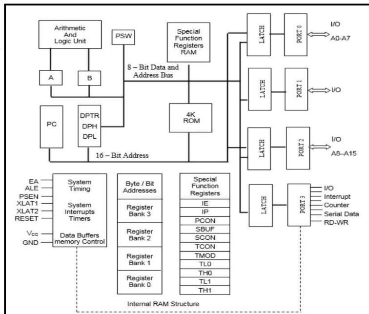
The 8051 has 256 bytes of internal RAM on-chip. It is divided functionally:
- Register Banks (00H - 1FH): The lowest 32 bytes form 4 banks (Bank 0 to Bank 3) of 8 registers each (R0 through R7). Only one bank is active at a time (selected by bits in the PSW). Bank 0 is the default at power-up.
- Bit-Addressable Memory (20H - 2FH): The next 16 bytes provide 128 individual bit-addressable locations (addresses 00H to 7FH). Useful for boolean variable flags.
- General Purpose RAM (30H - 7FH): The remaining lower bytes are used as standard scratchpad memory.
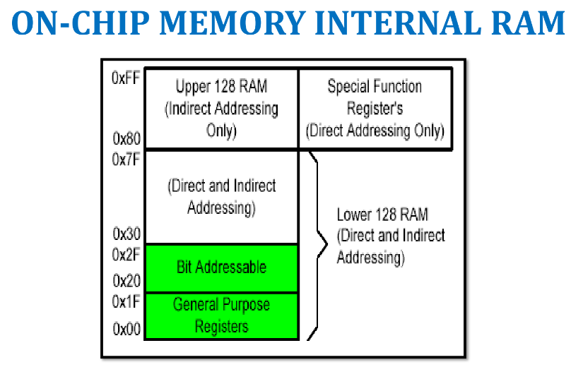
3. Special Function Registers (SFRs)
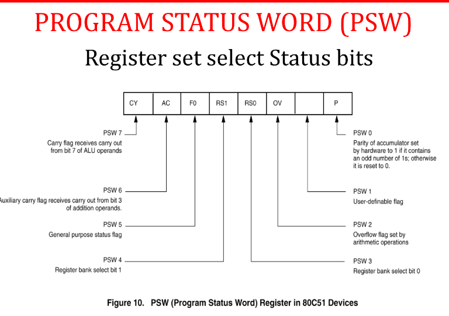
The upper 128 bytes of the on-chip RAM (80H - FFH) are reserved for Special Function Registers. They must be accessed using Direct Addressing. Only about 21-25 bytes are actually used.
- ACC and B: 8-bit registers used for arithmetic (MUL/DIV).
- DPTR: 16-bit Data Pointer, combining DPH and DPL.
- PC and SP: Program Counter (16-bit) and Stack Pointer (8-bit).
- PSW: Program Status Word (contains status bits like CY, AC, OV, and Register Bank select bits: RS0, RS1).
4. Addressing Modes
The way in which an instruction specifies its operand is called the addressing mode.
- Immediate Addressing: Data is provided directly in the instruction (prefixed with #).
MOV A, #30 | MOV DPTR, #2343H
- Register Addressing: Source or destination is a CPU register (R0-R7). Note: Moving between two registers directly (e.g., MOV R4, R7) is incorrect.
MOV A, R7 | ADD A, R4
- Direct Addressing: The 8-bit address of the memory location is specified directly. Usually for 30H-7FH or accessing SFRs.
MOV A, 70H | MOV 20H, 30H
- Register Indirect Addressing: A register (R0 or R1) acts as a pointer to the memory location.
MOV A, @R0
External RAM Access: Uses the MOVX instruction. DPTR provides a 16-bit address (anywhere in 64K), while R0/R1 provides an 8-bit address (limited to 0000H-00FFH).
MOVX A, @DPTR | MOVX @R1, A
- Indexed Addressing: Widely used for accessing static look-up table entries in the program (ROM) space using MOVC ("C" stands for code).
MOVC A, @A+DPTR | MOVC A, @A+PC
GENERAL THEORY: Instruction Sizes & Logical Clearance
Every instruction executed by the microcontroller consists of two parts: the Opcode (Operation Code - what to do) and the Operand (what data to do it on). The total byte size of an instruction depends entirely on the size of its operand.
- Opcode: Always takes exactly 1 byte of memory.
- Operand: Can take 0, 1, or 2 bytes depending on if it's internal, an 8-bit value, or a 16-bit value/address.
1-Byte Instructions (Opcode Only)
These instructions require no extra memory for the operand because the operand is either implicit (like the Accumulator) or refers to internal registers (R0-R7). The single byte specifies both the operation and the target.
- CPL A: Opcode only. The target (Accumulator) is implied. (1 byte)
- INC R1 / ADD A, R0: Registers are internal, no external data bytes needed. (1 byte)
- MOVX @DPTR, A: Moves data between Accumulator and external memory pointed to by DPTR. (1 byte)
2-Byte Instructions (Opcode + 8-bit Data/Address)
These instructions take 1 byte for the opcode, plus 1 extra byte to store an 8-bit immediate value or an 8-bit relative address.
- MOV A, #55H: Byte 1 = MOV A opcode, Byte 2 = 55H (8-bit data).
- MOV R1, #10H: Byte 1 = MOV R1 opcode, Byte 2 = 10H (8-bit data).
- DJNZ R2, 8006H: Byte 1 = DJNZ opcode, Byte 2 = Relative jump offset (the distance to jump back to 8006H).
3-Byte Instructions (Opcode + 16-bit Data/Address)
These instructions take 1 byte for the opcode, plus 2 extra bytes to store a full 16-bit immediate value or a full 16-bit memory address.
- MOV DPTR, #8020H: Byte 1 = MOV DPTR opcode, Byte 2 = 80H (High byte), Byte 3 = 20H (Low byte).
- LJMP 03 (Long Jump): Byte 1 = LJMP opcode, Byte 2 & 3 = The 16-bit target address to jump to.

Hand-written Notes: Instruction Sets Overview
8051 Instruction Set Overview
The 8051 instruction set is divided into 4 main categories:
- Data transfer
- Arithmetic Logic (A.L.)
- Bit manipulation
- Branch instructions
1. Data Transfer Instructions
Moves 8-bit data at a time. Format: MOV Dest, Source.
- Addressing Distinction: #45H indicates a literal value (hexadecimal 8-bit data), whereas 45H without the '#' indicates a memory address location.
- Immediate Data to Register/Memory:
- MOV A, #45H
- MOV R2, #45H
- MOV 30H, #45H
- MOV @R1, #45H (The '@' indicates the address location held by the R1 register)
- Memory to Accumulator (or reverse):
- Memory to Register (or reverse):
- Memory to Memory (direct & indirect):
- MOV 31H, 30H (Direct)
- MOV @R1, 31H (Indirect)
- External Memory to Accumulator (or reverse):
- MOVX A, @R0
- MOVX A, @DPTR (DPTR is the Data Pointer, a 16-bit special purpose register for 16-bit address locations)
2. Exchange Instructions
Content of a source (Register, direct, or indirect memory) can be exchanged with the destination content (Accumulator).
- XCH A, R1
- XCH A, 45H
- XCH A, @R0
- Exchange Digit (XCHD): Exchanges the lower order nibble (4 bits) of the Accumulator with the lower order nibble of the internal RAM location which is indirectly addressed by the register. (Note: 1 byte = 2 nibbles).

Original Hand-written Notes
EXPERIMENT 1
(A) LOAD THE ACCUMULATOR WITH THE VALUE 55H
(B) COMPLEMENT THE ACC 700 TIMES
AIM: Write a program to (a) load the accumulator with the value 55H, and (b) complement the ACC 700 times.
HARDWARE REQUIRED: 8051 microcontroller kit.
ALGORITHM:
- Initialise accumulator
- Set outer counter
- Set Inner counter
- Execute complement core operation
- Manage inner loop
- Manage outer loop
- terminate program.
SOURCE CODE:
| MEMORY ADDRESS |
MNEMONICS |
COMMENTS |
| 8000 |
MOV A, #55H |
Copied 55H to accumulator. |
| 8002 |
MOV R1, #10H |
Copied 10H to register R1. |
| 8004 |
MOV R2, #70H |
Copied 70H to register R2. |
| 8006 |
CPL A |
Complements Accumulator's data (logical NOT). |
| 8007 |
DJNZ R2, 8006H |
Decrement and jump if not zero for loop 1. |
| 800A |
DJNZ R1, 8004H |
Decrement and jump if not zero for loop 2. |
| 800D |
LJMP 03 |
Long jump used to end the program. |

Detailed Annotated Breakdown (Experiment 1)
Detailed Byte Analysis & Logic (Experiment 1)
This section provides a line-by-line logical clearance of the bytes and operations used in Experiment 1, without breaking the main table.
- 8000H: MOV A, #55H (2 Bytes)
Mnemonics = Opcode + Operand. This is the starting address location. Takes 2 bytes, so the next instruction is at 8002H.
- 8006H: CPL A (1 Byte)
Complement: Flips the bits of the value currently in the accumulator. Takes 1 byte, so the next instruction is at 8007H.
- 8007H: DJNZ R2, 8006H (3 Bytes)
Decrement Jump not 0: Decrements the counter by 1. If it is not zero, it jumps back to the label (address 8006H). Annotated as taking 3 bytes in this specific lab kit, putting the next address at 800AH.
- 800AH: DJNZ R1, 8004H (3 Bytes)
Outer loop decrement. Jumps back to 8004H until R1 reaches zero. Also annotated as taking 3 bytes, putting the next address at 800DH.
- 800DH: LJMP 03 (3 Bytes)
End of program.
Loop Calculation Note: To loop 500 times, the nested counters are set up as factors (e.g., 50 × 10 = 500). Counter 1 handles the inner loop, and Counter 2 handles the outer loop.
Kit Execution: G 8000 (Go to 8000) is used to execute the program directly on the hardware kit.

Original Hand-written Notes (Experiment 2)
EXPERIMENT 2
ADDITION OF TWO 8 BIT NUMBERS IN 8051 (WITHOUT CARRY)
AIM: Write a program to add two numbers using 8051 microcontroller and store the sum in register.
HARDWARE REQUIRED: 8051 microcontroller kit.
ALGORITHM: Addition of two 8-bit numbers:
- Load first 8 bit number into accumulator
- Load second 8 bit number into temporary register
- Add the contents.
- Store final sum from accumulator to another register
- Terminate the program.
SOURCE CODE:
| MEMORY ADDRESS |
MNEMONICS |
COMMENTS |
| 8000 |
MOV A, #01H |
Copied 01H to accumulator. |
| 8002 |
MOV R1, #02H |
Copied 02H to register R1. |
| 8004 |
ADD A, R1 |
Addition of contents of accumulator and register and sum is stored in accumulator. |
| 8005 |
MOV R2, A |
Copied contents of the accumulator to register R2. |
| 8006 |
LJMP 03 |
Long jump used to end the program. |


Original Hand-written Notes (Experiment 3)
EXPERIMENT 3
ADDITION OF TWO 8 BIT NUMBERS IN 8051 (WITH CARRY)
AIM: Write a program to add two numbers using 8051 microcontroller and store the sum and carry in the two separate memory locations.
HARDWARE REQUIRED: 8051 microcontroller kit.
ALGORITHM: Addition of two 8-bit numbers:
- Load 2 8 bit numbers (A, R0).
- Keep carry counter (R1).
- Add them (A + R0).
- Check the CY flag.
- Increment counter by 1 if cy is high.
- Store sum and carry at 8020H, 8021H external memory.
- Check response.
SOURCE CODE:
| MEMORY ADDRESS |
MNEMONICS |
COMMENTS |
| 8000 |
MOV A, #F1H |
Copied F1H to accumulator. |
| 8002 |
MOV R0, #30H |
Copied 30H to register R0. |
| 8004 |
MOV R1, #00H |
Copied 00H to register R1. |
| 8006 |
ADD A, R0 |
Addition of contents of register R0 to accumulator. |
| 8007 |
JNC 800A |
Jump if no carry to loop 1. |
| 8009 |
INC R1 |
Increment register R1's content by 1. |
| 800A |
MOV DPTR, #8020H |
Data pointer used to hold memory addresses for external memory RAM. |
| 800D |
MOVX @DPTR, A |
External data transfer between accumulator and external memory. |
| 800E |
MOV A, R1 |
Copied data from R1 to A. |
| 800F |
INC DPTR |
Increments the content of data pointer by 1. |
| 8010 |
MOVX @DPTR, A |
External data transfer between accumulator and external memory. |
| 8011 |
LJMP 03 |
Long jump to end the program. |

Detailed Annotated Breakdown (Experiment 3)
Detailed Byte Analysis, Binary Math & Logic (Experiment 3)
This section provides a line-by-line logical clearance of the bytes and operations used in Experiment 3, based on the annotated rough draft.
Kit Verification: To check the results on the hardware kit, use the memory display commands MD 8020H and MD 8021H to view the stored sum and carry responses respectively.

Rough Draft Notes (Experiment 4)
EXPERIMENT 4 (ROUGH DRAFT)
ADD TWO 16-BIT NUMBERS WITHOUT CARRY (8051)
Note: This is an annotated rough draft. The formal lab manual format (Aim, Algorithm) is not yet available.
MEMORY MAP (Little Endian approach):
The 16-bit numbers are split. "Keep lower first then higher".
Number 1: 1208H → Lower byte 08H at 40H, Higher byte 12H at 41H.
Number 2: A55DH → Lower byte 5DH at 42H, Higher byte A5H at 43H.
DRAFT SOURCE CODE:
| MEMORY ADDRESS |
MNEMONICS |
COMMENTS |
| 8000H |
MOV 40H, #08H |
08H data copy to 40H memory loc. |
| 8003H |
MOV 41H, #12H |
Load higher byte of 1st number. |
| 8006H |
MOV 42H, #5DH |
Load lower byte of 2nd number. |
| 8009H |
MOV 43H, #A5H |
Load higher byte of 2nd number. |
| 800CH |
MOV A, 40H |
Move lower byte of 1st number to Accumulator. |
| 800EH |
ADD A, 42H |
Add lower byte of 2nd number. |
| 8010H |
MOV 44H, A |
Store lower byte result in 44H. |
| 8012H |
MOV A, 41H |
Move higher byte of 1st number to Accumulator. |
| 8014H |
ADD A, 43H |
Add higher byte of 2nd number. |
| 8016H |
MOV 45H, A |
Store higher byte result in 45H. |
| 8018H |
LJMP 03 |
End of program. |
Detailed Byte Analysis & Logical Annotations
- 3-Byte Instructions (Direct Memory Initialization):
Instructions like MOV 40H, #08H take 3 bytes (Opcode + Direct Address + Immediate Data). This is why the memory addresses jump by 3 (from 8000H → 8003H → 8006H). Annotated in the draft as "mem - mem 3 byte".
- 2-Byte Instructions (Accumulator/Register Data Transfer):
Instructions like MOV A, 40H and ADD A, 42H take 2 bytes (Opcode + Direct Address). This is why the memory addresses jump by 2 (from 800CH → 800EH → 8010H). Annotated in the draft as "accum/reg. data transfer 2 byte".
- Accumulator Dependency:
Annotated with "By default result store in accum." and "addn to be done on any accum + gen purp register." This highlights the 8051 architectural rule that arithmetic operations like ADD must involve the Accumulator, and the result is inherently stored there.
Comprehensive 8051 Instruction Set Reference
A. Data Transfer Instructions
In this group, the instructions perform data transfer operations of the following types.
- a. Move the contents of a register Rn to A
- b. Move the contents of a register A to Rn
- c. Move an immediate 8-bit data to register A, Rn, or a memory location (direct or indirect)
- MOV A, #45H
- MOV R6, #51H
- MOV 30H, #44H
- MOV @R0, #0E8H
- MOV DPTR, #0F5A2H
- MOV DPTR, #5467H
- d. Move the contents of a memory location to A or A to a memory location using direct and indirect addressing
- MOV A, 65H
- MOV A, @R0
- MOV 45H, A
- MOV @R1, A
- e. Move the contents of a memory location to Rn or Rn to a memory location using direct addressing
- f. Move the contents of memory location to another memory location using direct and indirect addressing
- MOV 47H, 65H
- MOV 45H, @R0
- g. Move the contents of an external memory to A or A to an external memory
- MOVX A, @R1
- MOVX @R0, A
- MOVX A, @DPTR
- MOVX @DPTR, A
- h. Move the contents of program memory to A
- MOVC A, @A+PC
- MOVC A, @A+DPTR
- i. Push and Pop instructions
[SP]=07 // CONTENT OF SP IS 07 (DEFAULT VALUE)
MOV R6, #25H // [R6]=25H
MOV R1, #12H // [R1]=12H
MOV R4, #0F3H // [R4]=F3H
PUSH 6 // [SP]=08, [08]=[06]=25H
PUSH 1 // [SP]=09, [09]=[01]=12H
PUSH 4 // [SP]=0A, [0A]=[04]=F3H
POP 6 // [06]=[0A]=F3H, [SP]=09
POP 1 // [01]=[09]=12H, [SP]=08
POP 4 // [04]=[08]=25H, [SP]=07
- j. Exchange instructions
The content of source (register, direct memory, or indirect memory) will be exchanged with the accumulator.
- XCH A, R3
- XCH A, @R1
- XCH A, 54H
- k. Exchange digit
Exchange the lower order nibble of Accumulator (A0-A3) with lower order nibble of the internal RAM location indirectly addressed by the register.
B. Arithmetic Instructions
The 8051 can perform addition, subtraction, multiplication, and division operations on 8-bit numbers.
Addition
- i. Add the contents of A with immediate data with or without carry:
- ii. Add the contents of A with register Rn with or without carry:
- iii. Add the contents of A with contents of memory with or without carry using direct and indirect addressing:
- ADD A, 51H
- ADDC A, 75H
- ADD A, @R1
- ADDC A, @R0
CY, AC and OV flags will be affected by this operation.
Subtraction
- i. Subtract the contents of A with immediate data with or without carry:
- SUBB A, #45H
- SUBB A, #0B4H
- ii. Subtract the contents of A with register Rn with or without carry:
- iii. Subtract the contents of A with contents of memory with or without carry using direct and indirect addressing:
- SUBB A, 51H
- SUBB A, 75H
- SUBB A, @R1
- SUBB A, @R0
CY, AC and OV flags will be affected by this operation.
Multiplication
MUL AB: Multiplies two 8-bit unsigned numbers stored in A and B registers. Lower byte of the result is stored in Accumulator, higher byte in B register.
MOV A, #45H ; [A]=45H
MOV B, #0F5H ; [B]=F5H
MUL AB ; [A] x [B] = 45 x F5 = 4209
; Result: [A]=09H, [B]=42H
Division
DIV AB: Divides the 8-bit unsigned number in A by the 8-bit unsigned number in B. Result (quotient) is stored in A, remainder in B.
MOV A, #0E8H ; [A]=E8H
MOV B, #1BH ; [B]=1BH
DIV AB ; [A] / [B] = E8 / 1B = 08H with remainder 10H
; Result: [A]=08H, [B]=10H
DAA (Decimal Adjust After Addition)
When two BCD numbers are added, the answer is a non-BCD number. To get the result in BCD, we use the DA A instruction.
Eg 1:
MOV A, #23H
MOV R1, #55H
ADD A, R1 // [A]=78
DA A // [A]=78 (no changes after DAA)
Eg 2:
MOV A, #53H
MOV R1, #58H
ADD A, R1 // [A]=ABH
DA A // [A]=11, C=1 (Answer is 111. Accumulator data is changed)
Increment & Decrement
- Increment: INC A, INC Rn, INC @Ri, INC DPTR.
Increments value by 1. Rolls over from FFH to 0 without setting the Carry Flag. For DPTR, the 16-bit value rolls over from FFFFH to 0.
- Decrement: DEC A, DEC Rn, DEC @Ri.
Decrements value by 1. Rolls over from 0 to FFH without setting the Carry Flag.
C. Logical Instructions
Logical AND (ANL)
Does a bitwise "AND" operation between source and destination, leaving the resulting value in destination. The value in source is not affected.
- ANL A, #DATA
- ANL A, Rn
- ANL A, DIRECT
- ANL A, @Ri
- ANL DIRECT, A
- ANL DIRECT, #DATA
Logical OR (ORL)
Does a bitwise "OR" operation between source and destination.
- ORL A, #DATA
- ORL A, Rn
- ORL A, DIRECT
- ORL A, @Ri
- ORL DIRECT, A
- ORL DIRECT, #DATA
Logical Ex-OR (XRL)
Does a bitwise "EX-OR" operation between source and destination.
- XRL A, #DATA
- XRL A, Rn
- XRL A, DIRECT
- XRL A, @Ri
- XRL DIRECT, A
- XRL DIRECT, #DATA
Logical NOT / Complement & Swap
- CPL A: Complements all bits in the Accumulator.
- CPL C: Complements the Carry bit.
- CPL bit: Complements a specific bit address.
- SWAP A: Swaps the upper nibble and lower nibble of A.
Rotate Instructions
- RR A (Rotate Right): Each bit is shifted one location to the right, with bit 0 going to bit 7.
- RL A (Rotate Left): Each bit is shifted one location to the left, with bit 7 going to bit 0.
- RRC A (Rotate Right through Carry): Each bit is shifted one location right. Bit 0 goes into the Carry bit, while the previous Carry bit goes into bit 7.
- RLC A (Rotate Left through Carry): Each bit is shifted one location left. Bit 7 goes into the Carry bit, while the previous Carry bit goes into bit 0.
D. Branch (JUMP) Instructions
There are 3 types of jump instructions: Relative Jump, Short Absolute Jump, and Long Absolute Jump.
1. Relative Jump
Replaces the PC (program counter) content with a new address that is greater than (by 127 or less) or less than (by 128 or less) the address following the jump instruction.
- SJMP <relative address> (Unconditional)
- JC <relative address> (Jump if CY = 1)
- JNC <relative address> (Jump if CY = 0)
- JB bit, <relative address> (Jump if bit = 1)
- JNB bit, <relative address> (Jump if bit = 0)
- JBC bit, <relative address> (Jump if bit = 1 and clear bit)
- CJNE <dest>, <src>, <rel address> (Compare and Jump if Not Equal)
- DJNZ <byte>, <relative address> (Decrement and Jump if Not Zero)
- JZ <relative address> (Jump if A = 0)
- JNZ <relative address> (Jump if A ≠ 0)
Note: All conditional jumps are short jumps.
2. Short Absolute Jump
Only 11 bits of the absolute jump address are needed. The instruction length is 2 bytes. Destination must be within the same 2K block.
- ACALL <address 11>
- AJMP <address 11>
3. Long Absolute Jump / Call
Used to access the entire program memory from 0000H to FFFFH. Instruction length is 3 bytes (except JMP @A+DPTR). Not re-locatable.
- LCALL <address 16>
- LJMP <address 16>
- JMP @A+DPTR
E. Bit Manipulation Instructions & Subroutines
8051 has 128-bit addressable memory (bit addressable SFRs and PORT pins).
Bitwise Operations
- LOGICAL AND:
- ANL C, bit : AND carry and content of bit address, store in carry.
- ANL C, /bit : AND carry and complement of bit address.
- LOGICAL OR:
- ORL C, bit : OR carry and content of bit address.
- ORL C, /bit : OR carry and complement of bit address.
- CLEAR:
- CLR bit : Clears specified bit.
- CLR C : Clears carry.
- COMPLEMENT:
- CPL bit : Complements specified bit.
- CPL C : Complements carry.
Bit Level Jump Instructions
- JB bit, rel : Jump if direct bit is set.
- JNB bit, rel : Jump if direct bit is clear.
- JBC bit, rel : Jump if direct bit is set, then clear the bit.
Subroutines
Subroutines are handled by CALL and RET instructions:
- LCALL address(16 bit) : Long call (3 byte). Unconditionally calls subroutine at 16-bit address.
- ACALL address(11 bit) : Absolute call (2 byte). Unconditionally calls subroutine at 11-bit address.
- RET : Pops top two contents from the stack and loads it to PC.
- RETI : Return from Interrupt. Enables interrupts of equal and lower priorities to the one terminating, then pops PC from stack.